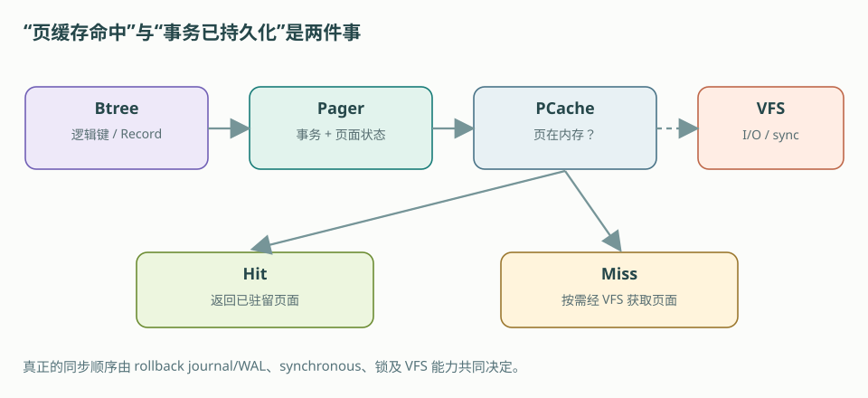
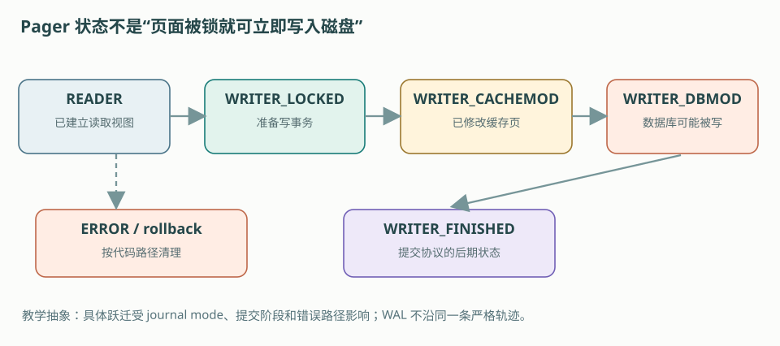
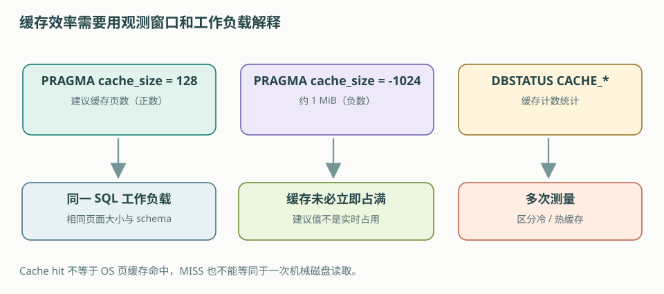

Pager 与 PCache：页面的生命周期与事务边界
同样一页数据，可以被 B-Tree 逻辑访问、驻留在 PCache、成为 dirty page，或由 Pager 协调日志和同步。理解这些身份之间的关系，才能正确分析缓存与持久化。
阅读提示：可轻点图解打开独立矢量原图；窄屏图解支持横向查看细节。
1. 缓存命中与事务提交为什么是两回事？
B-Tree 的调用者说“给我第 N 页”，Pager 决定该页目前是否可读、是否可以修改、与事务状态如何关联；PCache 帮助缓存页面内容。当页已经存在于缓存中，下一次读不一定需要 VFS xRead()；但即使缓存命中率很高，也不能因此断言新数据已经持久化到数据库文件。

SQLite 的官方 架构文档描述 page cache 与操作系统接口的分层。源码主要从 pager.c、pcache.c、pcache1.c 阅读，再按当前日志模式追踪 wal.c 与相应 os_*.c。
同一页的五种概念
| 概念 | 实质 | 不能混淆为 |
|---|---|---|
| Database page | SQLite 文件逻辑页号与内容 | OS 磁盘扇区 |
| Cached page | 内存里某一页面的数据 | 已经写入物理存储 |
| Dirty page | 在事务中被修改的缓存页面 | 已经提交 |
| Rollback journal | 旧页镜像与恢复信息 | 所有模式都存在 |
| WAL frame | WAL 模式追加的页版本 | 原地覆盖主库文件 |
2. Pager 的状态并非一条“必经直线”
SQLite 源码的 Pager 具有受 mode 与操作步骤约束的状态与不变量。对于传统 rollback journal 模式，可从 PAGER_READER、PAGER_WRITER_LOCKED、PAGER_WRITER_CACHEMOD、PAGER_WRITER_DBMOD、PAGER_WRITER_FINISHED 这一类状态名称理解写事务的不同阶段，另有 OPEN / ERROR 及清理路径。

关键不是死记箭头，而是检查每次转换时“持有哪些锁”“页面是否写入 journal”“是否允许写主文件”“发生 I/O 错误怎么办”。旧文章把 sqlite3PagerWrite() 解释成统一的写时复制（COW）策略是不准确的：rollback 模式需要日志保护旧页，WAL 模式的修改可先作为 frame 追加，两者不是统一的 COW 算法。
3. cache_size 是建议值，不是立即分配的内存
对同一数据库连接，可通过 PRAGMA cache_size 调整页面缓存的建议上限。正整数表示页面数量；负整数表示 KiB 量级的近似总内存目标，再换算为当前 page_size 的页数。默认 PCache 会按需分配，不会在 PRAGMA 设置后马上占满全部空间。

PRAGMA page_size;
PRAGMA cache_size = 128; -- 建议最多 128 页
PRAGMA cache_size; -- 读取当前连接建议上限
PRAGMA cache_size = -1024; -- 约 1 MiB 的页缓存建议
PRAGMA cache_size;这些设置对默认内置缓存有效，但应用替换 PCache 实现时可有不同策略。缓存容量与 PRAGMA cache_spill 也不是一回事：后者关系到 dirty page 被写出以及相关锁约束，不能被描述成“只管内存 LRU”。来源：官方 PRAGMA 资料。
4. 观测 CACHE_HIT / MISS / USED 的正确方法
sqlite3_db_status() 提供数据库连接范围的缓存统计：例如 SQLITE_DBSTATUS_CACHE_USED 可帮助观察当前缓存占用，SQLITE_DBSTATUS_CACHE_HIT 与 MISS 表示缓存访问计数。各状态参数的 current/highwater 用法不是统一的，应看 官方状态参数文档，避免把全部计数都读成同一种 high-water。
项目在 examples/13_cache_stats.c 中创建表、写入并读取缓存状态。实验显示自己的结果，不声称某次命中率达到固定百分比，也不以一条 SQL 的执行耗时推断“缓存提升 10 倍”。
cc -std=c11 -Wall -Wextra -Werror -O2 \
examples/13_cache_stats.c -lsqlite3 -o /tmp/13-cache
/tmp/13-cache
# 预期：打印用于描述当前连接的 cache_used/cache_hit/cache_miss
# 计数与库版本、事务和页面调度有关，不做固定数值断言。公平的前后对比
要比较两组 cache_size，最好重新打开连接、控制数据集/查询顺序，并分开记录冷缓存与热缓存。即使 SQLite cache miss 发生，OS 仍可能从其页缓存返回数据；观察不到物理磁盘读取的事实不能被误写为“VFS 每次 miss 都必然读取硬盘”。
5. 连接缓存管理与事务同步：为什么必须协同？
修改页面时，上层 B-Tree 通常要先向 Pager 声明将要写入，以让它建立适当的日志保护或 WAL 记录；只有满足事务安全前提之后才能执行一些写回操作。日志方式与同步级别共同决定哪些阶段必须确保数据已经持久化。
在 rollback mode，保护旧内容的日志一般先于主数据库的修改得到必要同步保证。WAL mode 则倾向于先追加 WAL 帧，后续由 checkpoint 决定何时把内容写回主文件。二者不能套用完全相同的写回时序。具体同步语义依赖 VFS 的设备特性和 synchronous 设置，超出缓存算法本身。
| 问题 | 观察入口 |
|---|---|
| 某页为何没有 xRead？ | PCache 命中，或 mmap 等优化路径 |
| 缓存达到上限后发生什么？ | 缓存回收、pin、dirty page 与 spill 条件 |
| 事务出错后谁回滚？ | Pager、rollback journal / WAL 对应路径 |
| 何时把文件视作安全？ | 提交协议 + VFS 同步与文件系统语义 |
6. 从一个 page number 追踪到一次真实缓存统计
实践路线
- 运行
examples/13_cache_stats.c，记录本机 SQLite 版本及 cache_* 计数； - 把 cache_size 从 128 改为 32，重复同一工作负载；
- 查看
pager.c中调用pcache.c的一个具体入口，确认“页是否驻留”的判断出现在哪里； - 判断实验能否证明真实磁盘 I/O 次数；如果不能，写出缺少的观测条件。
自测：PRAGMA cache_size=-1024 会预先 malloc 1 MiB 吗？
不会。对默认实现，它只是以当前 page_size 换算的缓存上限建议，内存通常按需分配；自定义缓存可以有其它策略。
下一章继续追到最底层：谁为数据库文件提供打开、读写、同步与锁操作。
官方原始资料与版本边界
本章示意图解释状态与接口责任，不承诺内部实现始终遵循所画箭头或所有平台共享相同锁/同步操作。调试时应把所读源版本、VFS 和 journal mode 一并记录。
- SQLite Architecture: Page Cache · SQLite 官方资料
- PRAGMA cache_size and cache_spill · SQLite 官方资料
- File Locking and Concurrency · SQLite 官方资料
- SQLite C API: DB Status · SQLite 官方资料
- Atomic Commit In SQLite · SQLite 官方资料